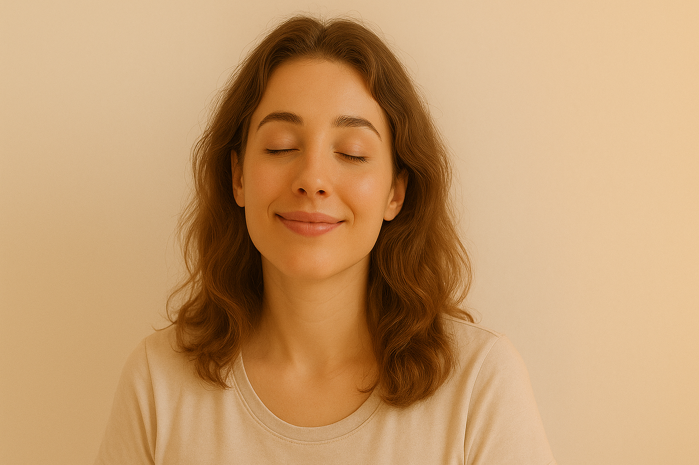

긴장 완화 & 스트레스 완충
스트레스 지수 ↓ 12.5%피로했던 몸과 마음을 이완하고 호흡을 편안하게.
자세히 보기
근거: Miyoshi Y. (2019). Restorative yoga for occupational stress among Japanese female nurses working night shift: randomized crossover trial.
Join Today
전 세계 82만 명이 아무도 모르게 앓고 있는 불균형
위 항목 중 하나라도 해당한다면 지금 '기적의 오토 밸런스'를 시작하세요.
핵심 효과를 슬라이드로 확인하세요.

피로했던 몸과 마음을 이완하고 호흡을 편안하게.
근거: Miyoshi Y. (2019). Restorative yoga for occupational stress among Japanese female nurses working night shift: randomized crossover trial.
밤새 여러 번 깨던 패턴에서 벗어나 숙면을 돕습니다.
근거: Turmel et al. (2022). Tailored individual yoga practice improves sleep quality.
브레인 포그를 줄이고 선명도를 높입니다.
근거: Innes KE, et al. J Alzheimers Dis (2017). 12분/일, 12주.
더부룩함을 줄여 편안한 소화를 돕습니다.
근거: Adjuvant yoga therapy for symptom management of functional dyspepsia: A case series. J Family Med Prim Care (2023).
※ 본 설명은 유사 연구의 결과이며 개인별 경험은 달라질 수 있습니다.